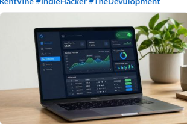
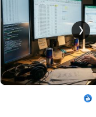
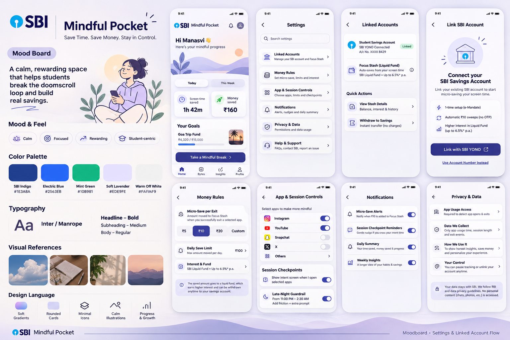
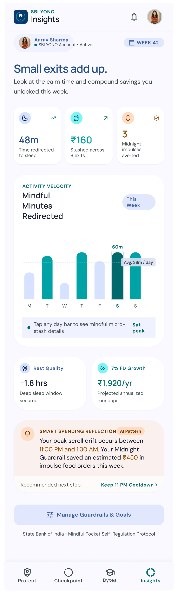
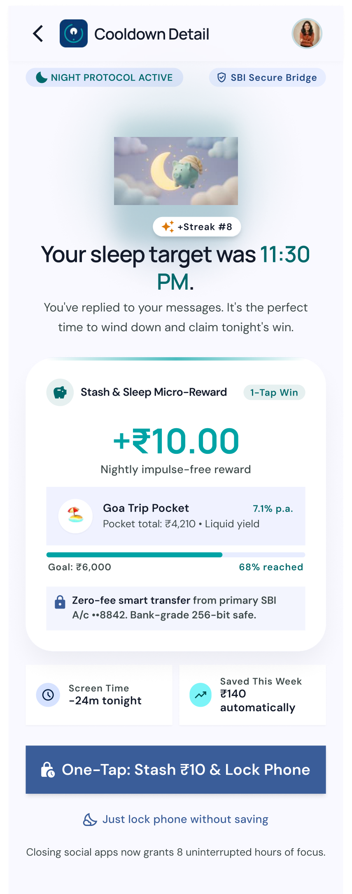
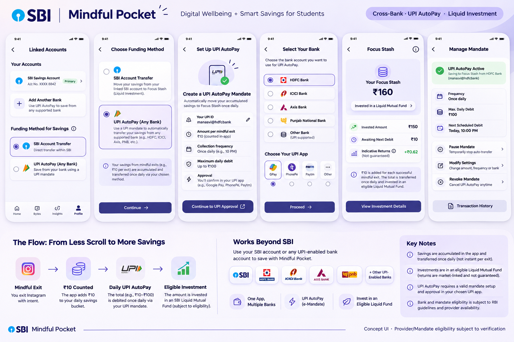

I'm Devgghya, a product designer and creative technologist building high-trust financial systems, operational automation SaaS, and behavioral banking products.
FinTech systems, operational automation and shipped client products.
ledgermate.internalEncrypted Sync
LEDGERMATEQuickBooks × RentVine Auto-Sync
Operational Automation SaaS
Manual entry eliminated. 3 hours → 5 minutes.
97%Time saved / cycle
ZeroReconciliation errors
Auto-SyncSheets → QBO + RentVine
Automated Bill IngestionDirect PDF AttachmentsLicense Killswitch
01B2B FinTech · Shipped SaaS2026
LedgerMate
A custom multi-ERP accounting automation platform built to eliminate the 5-hour daily manual invoice entry grind for US property management portfolios.
Origin
Built while working 40 hrs/week as a junior accountant, reverse-engineering manual Google Sheets, QuickBooks Online, Buildium, and RentVine workflows.
Shipped
Dual-ERP auto-sync, multimodal vision pipeline for handwritten contractor receipts, tenant move-out doc compiler, and direct PDF audit linking.
Impact
Compressed daily 5-hour manual bill entry into a 5-minute automated batch process (98% operational time reduction) with zero reconciliation drift.
Engineered a custom B2B SaaS automation platform while working as a junior accountant, eliminating repetitive daily bill entry for US property management portfolios.
Automated bidirectional sync across Google Sheets, QuickBooks Online, Buildium, and RentVine APIs with direct PDF evidence linking and remote license control.
Engineered multimodal AI vision pipeline parsing handwritten contractor invoices and automated tenant move-out document assembly.
Compressed daily 5-hour manual transcription grind into a 5-minute automated batch process (98% operational time reduction) with 100% audit integrity.
QuickBooks APIBuildiumRentVineMultimodal OCRB2B FinTech98% Time Saved
WebGraphic Bee
2026 – Present · Remote
Founder, Product Designer & Developer
Leading client product engagements from discovery, user flows, and information architecture to design systems, frontend code, and production deployment.
Shipped launch-ready, conversion-tested platforms across financial services, advisory, education, and SaaS.
Spatial memory computing system for Meta Quest 3 translating the Method of Loci into 3D cues in collaboration with Associate Professor Samarth Reddy.
Integrated headset camera feeds with an asynchronous FastAPI relay for multimodal Gemini Vision AI processing and runtime glTF 3D anchoring with offline procedural fallbacks.
Lead Product Designer (FinTech & Behavioral Design)
Mobile companion for SBI YONO Youth converting late-night doomscrolling friction into compounding micro-savings (+Rs. 10/save into SBI liquid vaults at 7.1% p.a.).
57-student survey + 8 in-depth interviews; architected behavioral intervention loops and an RBI-compliant zero-OTP internal sweep mechanism.
I'm a B.Des User Experience student specializing in financial workflows, operational automation, and behavioral banking products—from UX strategy to production code.
FinTechB2B SaaS & Banking
LedgerMate, SBI YONO & Advisory
Academic10.00 CGPA
B.Des User Experience
EngineeringDesign to Code
Full-stack web, APIs & spatial prototypes
Capabilities
FinTech UXAccounting AutomationBehavioral BankingDesign SystemsAPI OrchestrationQuickBooks & PropTechProduct DirectionSpatial AI / XRResponsive Web
04 / Contact
Let's make something useful.
For collaborations, product work and emerging interface experiments.
B2B FinTech · Operational Automation · Enterprise Accounting Systems
LedgerMate
Eliminating the 5-Hour Daily Bookkeeping Grind for US Property Management
RoleProduct Engineer & Architect
PlatformCloud Pipeline & Micro-SaaS
EcosystemQuickBooks · Buildium · RentVine
Impact98% Time Saved · Zero Error Rate
Executive Summary
In US property management, accounting teams lose thousands of billable hours every month to a mind-numbing bottleneck: manually copying contractor invoices, utility bills, and repair expenses from tracking spreadsheets into General Ledger accounting platforms (QuickBooks Online) and operational property ERPs (RentVine, Buildium).
While working 40 hours/week as a junior accountant at a firm managing residential and commercial US property portfolios, I experienced this daily friction firsthand. Rather than accepting 4–5 hours of daily copy-pasting as inevitable, I designed and engineered LedgerMate: a modular, multi-ERP automation platform and AI-powered document ingestion pipeline.
The Core Breakthroughs:
Dual-ERP Sync: Google Sheets → QuickBooks Online + RentVine/Buildium in a single atomic pass with direct PDF evidence linking.
Multimodal Handwritten OCR: AI vision pipeline parsing messy handwritten contractor/handyman receipts directly into structured accounting records.
Tenant Move-Out Pack: 1-click automated assembly of move-out invoices, deposit deduction calculations, and utility prorations.
Results: Compressed a 5-hour daily manual transcription grind into a 5-minute automated batch execution (98% operational time reduction) with 100% audit integrity.
1. The Origin: Working "Undercover" in the Accounting Trenches
Most FinTech designers design interfaces from secondary research or aesthetic Dribbble shots without ever touching a General Ledger or reconciling a bank feed.
With a 10+2 commerce foundation, I joined an accounting firm managing back-office books for US property portfolios. My daily reality was pure manual transcription for 40 hours a week: copying rows from Google Sheets, creating Bills in QuickBooks Online, assigning Chart of Accounts GL codes, posting duplicate charges into Buildium/RentVine, and hunting down PDF receipts across fragmented folders.
The Friction Multiplier: A single misclassified GL code created tax headaches for property owners. Misplaced PDF receipts caused audit panic. And 4–5 hours of every single workday were lost to mechanical typing.

LedgerMate Operational Dashboard

Workstation: Spreadsheets vs VS Code
2. The Turning Point: "Design with and for AI"
While studying User Experience Design at Graphic Era University, I took Design with and for AI taught by Associate Professor Samarth Reddy. The core realization: Design is not just visual styling—it is system architecture. A designer who understands information models can use modern AI code synthesis to engineer working software.
Armed with deep domain knowledge of property bookkeeping and powered by VS Code and GitHub Copilot, I began engineering LedgerMate to solve my own daily professional agony.
3. Core Engineering & The Three Automation Pipelines
1. Bi-Directional Multi-ERP Sync & Direct Evidence Linking
Reads unbilled rows from Google Sheets, validates schemas, creates bills in QuickBooks Online (corporate GL), posts unit charges in Buildium/RentVine, embeds PDF proofs directly via binary API endpoints (no Google Drive links), and writes back the generated transaction IDs with a 'Done' flag.
2. Multimodal Vision OCR for Handwritten Contractor Invoices
Local plumbers, lawn care teams, and handymen frequently submit handwritten carbon paper receipts with scribbled line items. LedgerMate integrates a multimodal vision extraction pipeline that parses handwritten notes, separates labor from parts, extracts totals, and stages structured JSON directly into Buildium.
When a tenant vacates, property managers face strict statutory deadlines to return security deposits. LedgerMate synthesizes move-out inspection checklists, outstanding utility ledgers, and repair deductions to compile a standardized, audit-ready Move-Out Statement and reconciliation letter in under 30 seconds.
4. Reliability, Security & IP Architecture
Atomic Batching & Exception Queues: If 1 bill out of 75 fails (e.g. an unmapped vendor name or missing unit number), LedgerMate isolates the exception into an interactive review queue while successfully processing the other 74 rows without crashing the batch.
Idempotency Safeguards: Unique composite hashing (Vendor + Invoice# + Property ID + Amount) mathematically prevents duplicate bills even if a user triggers sync multiple times.
Licensing & Remote Kill-Switch: Built a client portal with usage metrics, token encryption, and an administrative license switch ensuring proprietary business logic remains secure.
5. Quantifiable Business Impact & ROI
98%Daily Time Reduction (5h → 5m)
0.0%Reconciliation Error Rate
100%Direct PDF Attachment Rate
100+Billable Hours Saved / Month
"I hadn't joined the firm just to do data entry; I joined to dissect the mechanical reality of financial systems from the inside. Once I built the system, I understood the value of software ownership."
— Devgghya Kulshrestha (Reflecting on the LedgerMate Build)
6. The Founder's Pivot: From Task-Doer to IP Owner
Building LedgerMate revealed a fundamental business truth: building system-level automation creates an order of magnitude more economic value than repetitive manual keystrokes.
Because LedgerMate was engineered independently on my own environment with proprietary logic, I maintained full legal and intellectual property ownership of the codebase. I preserved the platform, modularized its connectors, and repackaged it into an independent B2B automation asset that serves as the foundation of my FinTech engineering portfolio.
7. Interview Defense & FAQs
Q1: Why not simply use off-the-shelf tools like Zapier or Make.com?
Off-the-shelf iPaaS platforms are brittle for dual-ERP property accounting. Zapier charges steep fees at high transaction volume, lacks atomic batch rollback, and cannot handle complex hierarchical mappings (matching a contractor invoice to a specific property and unit in Buildium while simultaneously debiting the correct GL Chart of Accounts in QuickBooks Online). Furthermore, Zapier cannot handle multimodal handwritten invoice parsing or automated Move-Out PDF document compilation out of the box.
Q2: How did you ensure data integrity between QuickBooks and Buildium?
LedgerMate enforces a strict two-phase commit pattern. The payload is validated, posted to QuickBooks Online to capture the generated TxnId, and only upon an HTTP 200/201 response is the unit charge posted to Buildium/RentVine, cross-referencing both IDs before marking the spreadsheet row as Done. If any endpoint fails, the transaction is flagged in the exception queue for manual resolution rather than corrupting the ledger.
Q3: How did a designer build this without a traditional Computer Science degree?
Modern software engineering is undergoing an architectural inversion. What matters most today is deep domain empathy, rigorous information architecture, and the ability to steer AI code models (GitHub Copilot, LLM relays) with surgical precision. Because I understood debits, credits, vendor terms, and property operations, I was able to specify the exact system logic that an outside software engineer would have taken months to comprehend.
Turning intentional screen exits into healthier attention habits and small, transparent savings.
ScopeUX/UI Portfolio Case Study
PlatformAndroid + iOS Concept
AudienceStudents Aged 18–24
RoleLead Product Designer

Moodboard, Design Language & Settings/Linked Account Flow: A calm, rewarding space helping students break the doomscroll loop and build real savings.
The Design Challenge
How might we help students leave an infinite scroll without shame—and convert the moment of self-control into an achievable financial habit?
Important Concept Disclaimer: Conceptual extension of the SBI YONO ecosystem. Not an SBI product, confirmed partnership, approved investment offering, or live banking integration.
01 / The Opportunity
Students use social platforms for genuine reasons: class messages, project coordination, inspiration and friendships. The problem is not opening an app; it is losing track of why they opened it. An intended two-minute check can easily become a prolonged reel session.
Problem Statement
Traditional screen-time blockers are either easy to bypass or feel punitive and patronizing. Students need a respectful pause that preserves legitimate access and makes exiting feel rewarding—not like a personal failure.
Concept in One Sentence
Mindful Pocket asks students to name their intention, intervenes at configurable moments, and records a small savings commitment whenever they choose to exit with intent.
Audience
18–24-year-old students with social media and pocket-money habits
Role
Lead Product Designer (portfolio concept exploration)
Portfolio concept; proposed technical and financial integrations require validation
02 / Research → Evidence
Findings from the project's primary quantitative survey (57 respondents) and 8 in-depth student interviews:
78%Reported exceeding intended visit duration
33%Identified displaced sleep as leading casualty
42%Reported stopping only on 'clock shock'
30%Opened app solely to reply to a DM
"Bas sone se pehle ek baar last time Insta check kar leti hu… I spent genuinely two hours watching Reels."
— Participant U6 (The Bedtime DM Trap)
"I thought half an hour; when I saw 1:40 AM, I was shocked… strict lockouts make me bypass the limit."
— Participant U1 (The Clock Shock)
Key Synthesized Insights
Co-located Tasks: Intentional and unintentional use occur inside the exact same app; indiscriminate blocking creates friction for legitimate study tasks.
Agency over Interruption: A gentle time checkpoint is better aligned with student autonomy than a scolding interruption.
Late-Night Vulnerability: Sleep displacement and midnight impulsivity are promising contextual intervention points.
Non-Punitive Savings: Small, visible money goals reinforce self-control only if debits are optional, capped, and never framed as a penalty.
03 / Strategy and Principles
PROTECT
Ask "Why are you opening Instagram?" and allow a legitimate reason (e.g. replying to a DM).
RESET
Offer a 15-second checkpoint after a student-selected interval (e.g. 15 mins).
REWARD
Mark an intentional exit as a win and record a configurable pending save (+₹10).
COMPOUND
Collect authorized accumulated savings on an agreed schedule; show transfer and investment states distinctly.
Behavioral Design Rationale
Implementation Intentions: Asking users to specify their purpose before stimulus exposure activates conscious System 2 awareness. Micro-Friction: A short reflective pause breaks automated dopamine loops without forced lockouts. Positive Reinforcement: Associating exits with tangible goal progress (Goa Trip Fund, Laptop Fund). Autonomy & Reversibility: Students can defer checkpoints, edit savings amounts, or pause automation anytime.
Ethical Guardrails: Avoid shaming vocabulary like "addicted", "failed", or deceptive streak pressure. Saving must be opt-in, capped, and affordable. Never withdraw money merely because a student stays in an app; never claim a deposit or investment before transaction confirmation.
Figure 1. Provided screen flow: onboarding to intent checkpoint, Focus Stash and Profile. Original working wireframes supplied by project owner.

Dual-Impact Insights Dashboard

Contextual Exit Bridge & Micro-Save
07 / Financial Experience: SBI + Other Banks
The product embraces a bank-inclusive model: students may use an SBI savings account or an eligible external bank account (HDFC, ICICI, Axis, PNB) as their funding source. The destination is a transparent, separately disclosed liquid savings or mutual fund investment product.
Commitments group into a daily collection amount, subject to student's daily maximum cap (e.g. ₹100).
C. Authorize
Student approves a supported UPI AutoPay recurring mandate or bank authorization during setup.
D. Execute
Payment provider attempts scheduled debit; failed debits are never shown as savings.
E. Invest (Optional)
If opted into an eligible liquid fund, investment order submits through a regulated partner.
F. Reconcile
UI displays pending commitments, transferred cash, order processing, and redeemable balance separately.

Figure 2. Conceptual high-fidelity exploration of proposed cross-bank funding and mandate flows. Illustrative screen content; provider-specific features need verification.
08 / UI System and Interaction Language
The visual direction balances institutional financial trust with an approachable, calm student environment—utilizing quiet whitespace, accessible typography, and restrained motion.
Brand Expression
Calm, clear, friendly, financially trustworthy
Primary Colors
Deep Indigo (#1E3A8A), Electric Blue (#2563EB)
Positive Action
Mint Green (#10B981) for completed progress and confirmed transfers
15-Second Pause: Gives students a meaningful choice to disengage; avoids aggressive, irritating blocks. "Reply to DM" Intent Path: Recognizes that communication is legitimate and shouldn't be penalized. Dual Metric Dashboard: Places time saved and money stashed side by side, but never blurs behavioral estimates with verified bank balances. Finite Bytes Feed: Financial literacy cards have a distinct end point to ensure learning doesn't become another doomscroll.
09 / Feasibility, Risk, and Compliance
Cross-Platform OS Capabilities:
• Android: App-usage monitoring relies on UsageStatsManager. Interstitial prompts depend on OS permission grants and background restrictions; Accessibility Services cannot be used as a blanket interceptor without strict Google Play policy compliance.
• iOS: Uses Apple's FamilyControls and ManagedSettings entitlements within the sandbox. Shield configurations provide native boundaries without reading private application data.
Payments & Investments Compliance:
• UPI AutoPay & e-Mandates: Recurring debits follow NPCI and RBI e-mandate guidelines. Aggregating into a daily batch minimizes transaction failures and provider load.
• Liquid Mutual Funds: Must clearly disclose AMFI risk notices: returns are market-linked and not guaranteed; NAV cutoffs and KYC requirements apply.
• Privacy: Only aggregate device usage timestamps are accessed. Never inspect message contents, photos, or private communications.
10 / Measurement and Validation
Behavior
Share of sessions ended at intended checkpoint; median overrun minutes; voluntary pause usage
Comprehension of pending vs invested funds; payment dispute rate; redemption velocity
Equity
Cross-bank success rates across devices (Android vs iOS); accessibility compliance
Testing Plan
1. Run 5–8 formative usability tests evaluating onboarding and intent selection.
2. Conduct a 3-stage comprehension test asking users where ₹10 is: (a) after exit, (b) after debit, (c) after mutual fund allotment.
3. A/B test a guilt-free checkpoint against a conventional hard-lockout to measure perceived agency.
11 / Reflection & Provenance
The core insight of Mindful Pocket is that digital wellbeing and financial wellbeing share an identical behavioral challenge: helping people act in accordance with their long-term goals during moments of short-term impulse. The opportunity is not to monetize guilt, but to celebrate and reward self-regulation.
Official Research & Regulatory Provenance
• Primary research: 57 survey respondents, 8 in-depth interviews (U1–U8).
• NPCI: "AutoPay facility on UPI for recurring payments" (Circular 2020).
• Reserve Bank of India: "Processing of e-mandate in UPI for recurring transactions" (2020).
• AMFI: "Risks in Mutual Funds" & "Liquid Scheme Guidelines".
• Apple Developer: "Requesting the Family Controls entitlement" (ManagedSettings framework).